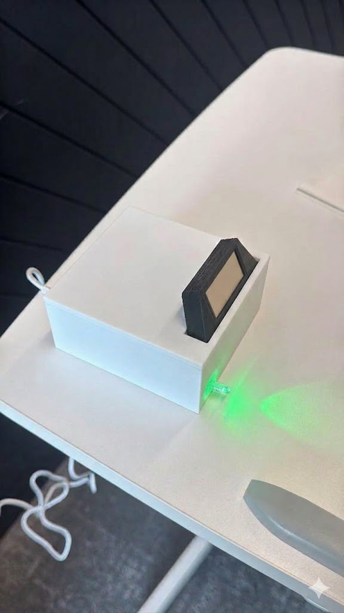

FocusFinder 2026
A desk robot that notices when you stop paying attention. A Raspberry Pi Zero 2W runs OpenCV face detection, and a pair of animated eyes on a transparent OLED follows you. If you look away for too long, a Pico turns on an LED and a buzzer.
Raspberry Pi, OpenCV, MicroPython